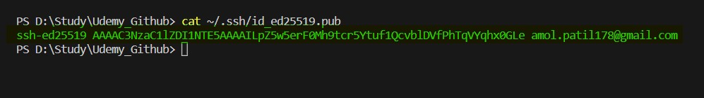

Git Notes
What is Git and why do we need?
Git is a version contol tool. Lets assume we have updated some code on day 1, and made few more changes in code on day2 and then made some changes on day 3. But there is some problem on day 3 updates and if you want to go back to day changes. Hence we need version control tool. It also keeps track changes in each version. It mainly used for project collabrations.
What is difference between Git and GitHub
| GitHub | Git |
|---|---|
| Its a Service | It is a Software/Tool |
| It hosts Git repository/folder/source code | It controls the code versiona and keeps track of code changes |
| provides GUI interfaces | It workss through CLI (command line interface tool) |
| It is maintained on web/cloud | It is intalled and maintained locally |
Refer below commands for git configurations
This command is used to know git configurations : git config --list
the result of this command will be like this
 Now lets say if we want to change the user name. Then we can us this command:
Now lets say if we want to change the user name. Then we can us this command: git config --global user.name "amolpatil178"
Below is workflow of Git
Whenever create a directory and let's say we are working on files in that direactory. If we want to push this directory on Git, we need to undestand its flow. There are 4 terms we need to understand : Working directory -> Staging area -> local reposiroty -> remote repository
- Working directory : The directory in which your code files are.
- Staging area : This is the space where git track the files in our directory.
- local reposiroty : This is our local repository connected to Git
- Working directory : This is our remote repository and pushed on github
If we compare with actual git commands:
Working directory -> Staging area -> local reposiroty -> remote repository
dire:UDEMY_GITHUB -> ...git add.. -> ...git commit... -> .....git push....
To know which files are in our workign directory : ls
if we want know hidden files our workign directory : ls -a
The command git status is used to know the status of tracked and untracked files in staging area. So we need to move our working directory to staging area hence we need to use command git init. And now if we run git status, you can see there are untracked files which means they are not added to staging area yet.
 So to add the files in staging area, we use command :
So to add the files in staging area, we use command : git add file_name1 file_name_2 or if we want to add all files to staging area then we can use git add .
 Now our files are in staging area and there are no untrackde files. But lets say if we modify the files in working directory. then again we need to add it in staging area using git add. we can see in below image :
So it means Git keeps trcak of change in code i.e. change contol.
Now our files are in staging area and there are no untrackde files. But lets say if we modify the files in working directory. then again we need to add it in staging area using git add. we can see in below image :
So it means Git keeps trcak of change in code i.e. change contol.
Now lets say we don't want to add changes to staging area which are modiefied in one of the file. It means we can unstage the modification and go back to previuos changes. So lets use command git diff to know which changes are made.
Here you can see the '-' sign denotes this is modifeid with content in '+' sign.
lets say we want to unstage change then we can use git restore file_name
We have added code to staging area. Now we need to move our cod to local reposiroty. so we can use this command : git commit -m "git notes from udemy learning center"
In git commit cammand there -m which indicate a message.
whener we commit our code it will create unique id.Here we are creating version of our code. If we need to go back to our previous code version we can use this unique id. Now lets just modifiy some files and see our version control works.
To know how many commits has done in local reposiroty, we can use : git log
In above image we can see two versions, first one is with message "git notes from udemy learning center" and second one which is latest "new notes added". if we want have log information concise, we can use : git commit --onelineif we want to go back to previous version.
you can see in above image, there are 3 commits so far in local reposiroty, there is HEAD which is at master branch and it will be always pointed towards to latest commit. We have used command : git checkout commit_id e.g. git checkout 7940eee. Now we want to go to our latest version i.e. commit id= bcc91d8. we can use git checkout master. Here "master" is branch name which currently we are.
Below are useful commands related commit and version contorl:
| Command | description |
|---|---|
| git log | It gives all information about all commits |
| git log --oneline | It gives concise information about all commits |
| git checkout commit_id | It moves our local reposiroty to previous versions |
| git show/git show head | It gives information about latest commit |
| git show commit_id | It gives information about specific commit |
| git reset --soft HEAD^ | It goes back from local repository to staging area. basically it means uncommit |
| git reset HEAD^ | It goes back from local repository to working directory. |
| git reset --hard HEAD^ | It will delete the new changes made in local repository. |
Why and What is SSH Key?
SSH is secure shell protocall, Using the SSH protocol, you can connect and authenticate to remote servers and services. With SSH keys, you can connect to GitHub without supplying your username and personal access token at each visit. You can also use an SSH key to sign commits.
Basically there are two keys : 1.Public key 2.Private key. The Public key is kept at Github remote servers in your account. so whenere data is pushed to github remote server. first it is encrypted with private ket then it sent to remote server. Then remote server decrypt the data using the public key of that local computer.
How to set up SSH key?
To generate new SSH key we need to run this command : ssh-keygen -t ed25519 -C "amol.patil178@gmail.com"
This creates a new SSH key, using the provided email as a label.> Generating public/private ALGORITHM key pair.. When you're prompted to "Enter a file in which to save the key", you can press Enter to accept the default file location. Please note that if you created SSH keys previously, ssh-keygen may ask you to rewrite another key, in which case we recommend creating a custom-named SSH key. To do so, type the default file location and replace id_ssh_keyname with your custom key name.
Now it will ask for type a secure passphrase. then type pass phrase.
We can check the detail of ssh file created using : cat ~/.ssh/id_ed25519.pubNow we can keep this key in out githum account under SSH and GPG key under setting.
How to connect local reposiroty to remote reposiroty?
To connect our local repo to remote repo. first we need to have remote repository. So we can go to our github account and create new repository. Once you create repository we need to run few commands:
1. git remote add origin git@github.com:amolpatil178/Git_Notes.git
2. Then we can change branch to main. It means our current branch is Master and change it to Main.git branch -M main
3. we can check if our repository is connected to remote repository by using command : git remote -v. It will return the remote URL of our remote reposiroty.
4. Then we can push our code using command : git push -u origin main
how to commit from remot repo and take pulll to local repo?
We can got to specifc file in our remote repo and click on edit button. Then update the content and add a message for commit and hit the commit button. Now we need to take a pull because this commited code won't be avilable to our local repo. so we can use command: git pull origin master
What is Gitignore file?
The .gitignore file is used to keep our information secret. we can keep secret information in gitignore file. It means whatever information kept in gitignore file will be at local reposiroty and it never pushed to remote reposiroty. We can add file names or folders which we want keep as secret. So we need to create .gitignore file and add file/folder names that need to be keep secure. Here we can see there is secret.txt file which we kept secure in .gitignore file.
what is README.md file?
The README.md file is a markdown file where we can add all documentation about our project. This file is wrteen is markdown langage. You can add a README file to a repository to communicate important information about your project. A README, along with a repository license, citation file, contribution guidelines, and a code of conduct, communicates expectations for your project and helps you manage contributions. There are few below markdown langauge syntax we can use:
1. Headings: we can use # for heading level 1 then ## for heading level 2 : #heading 1. Read more...
What is branch and merging?
Branch is seperate repository and branch of Master repository/branch. Whenever there is big project, we seperate the tasks or features and create new branch for seperate feature, so editing new branch will not affect the Master brnach. Suppose your application is running fine and all code is in Master branch. Let's say you want to add new feature to your application, then we can create new branch which will have all code from Master branch and edit in this new branch. Once the feature is tested and working fine we can merge new branch to Master branch. Below are steps to create brnach and merge branch.
- Create branch using command :
git brnach branch_name - Move to new branch repo :
git checkout branch_name - Make the changes in code which you want to
- Once changes are done we can merge branch to Master branch using command :
git checkout masterthen
Below are some useful commands:
| Command | description |
|---|---|
| git branch | It gives all branches avilable in local repository |
| git branch -r | It gives all branches avilable in remote repository |
| git branch -a | It gives all branches avilable in remote and local repository |
| git brnach branch_name | Create new branch |
| git checkout branch_name | Move to new branch created |
| git checkout -b branch_name | Create new branch and move to new branch created. |
| git merge branch_name | Merge new branch in to master branch |
| git push -u origin branch_name | To push our new branch to remote reposiroty. |
| git branch -d branch_name | Delet new branch |
How to push new branch to remote repo and merge it on github?
To push our new branch created to remote repo, we can use git push -u origin branch_name. Then we need to go on our github remote repository and we will see that new branch is updated saying we can merge it to master branch. But we need to create pull request and approve that pull request then we can able to merge new branch to master branch. Now we have remote master branch which has latest code. But our local master repository is not updatedor synched with remote master repository since we have merged new branch remotely. Hence it is always good practise to do git pull before starting anything.
what is 2 way merge or fast forward merge?
Suppose we have commited somthing in master branch. Then we have created new branch called feature1 and we have made 3 commits in feature1 branch. Here our master branch is 3 commits behinde, so the process to merge master brnach in feature1 branch lastest commit called 2 way or fast forward merge. Lets see below images to understand more:
We have made first commit in master branch and can see HEAD is at the latest commit in master branch.Now we have created new branch called feature and move our head feature branch. Here we have made 3 commits and can see HEAD is at the latest commit in feature branch.Now we need to merge this lastest commit to Master branch as it lags behind by 3 commits.
what is 3 way merge?
Suppose you are working in project. And you have created new branch called feature and we have made 3 commits in feature branch. At same time your team member has made 2 commits in master branch, so the process to merge master branch latest commit (team member's commit) in feature branch lastest commit called 3 way merge. Lets see below images to understand more:
We have made first commit in master branch and can see HEAD is at the latest commit in master branch.Now we have created new branch called feature and move our head feature branch. Here we have made 3 commits and can see HEAD is at the latest commit in feature branch.Now suppose your team member has made 2 commits in Master branch and can see HEAD at latest commit in master brnach.Now it is time to merge feature branch commit to Master branch as it lags behind by 2 commits in master. You can see git has done extra commit to merge latest commit in Master to latest commit on feature branch.
What is merge conflict?
Suppose you are in master branch. There is one file which has content of 2 lines. Now you have created new branch. We made some changes and adde content 3rd line in that file. We moved to master branch without merging new branch. And in Master branch we have updated same file by adding content at 3rd line. Now we try to merge master with new branch it will create conflict which called as merge conflict.